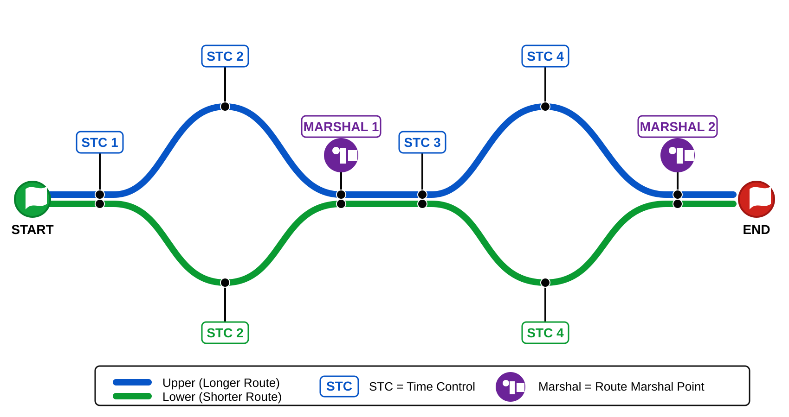

Schedule — Route, Timings and Controls
Overview
The Schedule page is used to build or import the rally route and calculate timings. You add rows of instructions and controls as required. Distance and speed are set for each row of the schedule. As controls are added to the schedule, they are automatically added to the controls page based on the selected rally day.
A rally day can include a second route option. Refer to Route options below.
The page has a Normal/Compact button. Toggling this changes the page size.
Typical Workflow
- Build the route manually, or use Import Mapped Route to bring in a route prepared in Mapping.
- Define distances and speeds, times are calculated automatically.
- Control what is to be printed, using tick boxes and colour rules, red is not printed.
- Manage Speed Groups (SG) by comparing them side by side.
- Add and manage Added Time adjustments, examples, traffic lights, tea and lunch stops.
- Select Timeline to review your rally schedule and the interaction of speed groups.
- Save, Load, Rally projects.
- Print schedules based on day, route and speed group.
Understanding the Schedule Table
The Schedule can be prepared in two ways: build it manually by entering instructions, distances, speeds and controls, or import a mapped route prepared in Mapping. With a mapped route, Mapping determines the physical route and control positions; Schedule is where speeds, timings and schedule instructions are managed.
The main table brings route instructions and timing information together. These visual cues help when first using the page:
| What you see | What it means |
|---|---|
| Instruction rows | Route instructions, distances and their calculated timings. |
| Speed Group (SG) cards | Additional speed and timing information for selected speed groups. |
| Orange rings | Distance or speed values not yet edited or confirmed. |
| Blue text | Automatically calculated or non-editable information. |
| Red text | Information excluded from the normal printed schedule. |
| Black text | Normal editable and printed information. |
| Control rows | STCs, Start STCs, Marshals and Open Controls that feed into the Controls page. |
| Added Time rows | Additional time allowances that can be set for each speed group. |
The sections below explain how to edit these values and control what appears in print.
Schedule Layout
Day selection
Purpose: To select which rally day is being viewed and edited in schedule, when you select an alternate day the Controls page for that day will be automatically selected, likewise the same applies selecting a day in Controls, the schedule for that day will be presented. On a rally day the pages for that day are automatically selected on opening the program.
How to use:
- Use the Day selector at the top of the page.
- Select the required day.
- The visible cards and data update immediately.
Speed Group (SG) Cards
To show timing and speed information per speed group.
In the button panel above the main table is a listing of the 4 SGs and the maximum speeds of that group. If a group has been allocated (Admin) then the group will include a selection tick box, when selected that SG card will be presented in the schedule table. The cards can be freely selected and deselected, data entered into them being retained when closed.
- SG cards appear within the Instruction column when selected in the control panel.
- Each lane shows time and speed for that group, adjust speeds for each group as required.
- When time of the page row is excluded from print, tick box selected, the times of the SG lanes are automatically excluded.
- SGs are only provided when setup in the Admin page.
Building the Schedule
Rows
To add rows to the Schedule table select ADD ROW a selection menu will be presented.
Row types:
- Instruction — normal route instruction.
- Instruction rows - 5 off
- STC — Self Time Control.
- Marshal — marshal control point.
- Open Control — entrants can arrive up to 10 minutes early without penalties, there may also be additional rules.
- Added Time — applies a time delay adjustment, per speed group.
- Start STC — resets the timing baseline. Entrants record their start time at the control, this time is then used to calculate later STC and Marshal timings.
Gear icon in the first column
When selected, a menu is presented offering a number of insertion options. Inserts are placed in the row below the selected row. There is also a delete option.
Distances
Distances have two decimal places, but for Controls three are provided on data entry, required for accuracy when timings are validated using GPS linked data.
Distance validation
Warning of an invalid distance sequence.
- If a distance goes backwards, the field is flagged by a red border.
- This highlights a route distance error.
Note: Calculations continue, but the error should be corrected before use.
Speed validation (print clarity)
Speeds are only printed in a following row when the value changes. This is applied automatically.
Timing and Controls
Open Control row
At an open control an entrant can arrive at the control up to 10 minutes (600 seconds) early without penalty, seconds earlier than 600 will be scored as well as any seconds late.
Added Time row
An added row enables the introduction of added time to the next instruction, times added are SG independent. On screen an added time row is taller but in print its row height is the same as any other row.
Added times are included to compensate for delays at traffic lights and time provided for breaks in the schedule, such as lunch.
Added times are applied to each SG individually.
Optionally the added time row can be selected not to print, "NO PRINT", in which case you can use an instruction row above, its dist. being set to the same as that of the added time row, then write your own details. The added row timings will still be applied to the row below it.
Use case
Such timings can be used to give slower speed groups a head start to avoid faster groups needing to overtake in a section where it might be difficult to do so, for example after a lunch break.
Tip: Use Timeline to aid appreciation of groups as they proceed along the route.
Start STC row
A Start STC establishes a new timing reference. The Schedule shows 00:00:00 at this point.
When using the Rally Recorder in Button mode, the entrant presses the Start STC button to record the elapsed rally time shown on the Recorder. Subsequent STC elapsed times are measured from this new reference.
Using Mapping with Schedule
Mapping and Schedule use the same Rally Workspace. Each rally has a Maps folder containing separate Route 1 and Route 2 folders where applicable.
Importing a mapped route
- Select the correct rally day and route in Schedule.
- Select Import Mapped Route.
- The file picker opens in Maps/Route 1 or Maps/Route 2, based on the active Schedule route.
- Select the required mapping file.
Schedule imports the mapped Waypoints and Controls, together with their notes and distances, in route order. Breadcrumbs are not imported because they are used only to shape the route in Mapping.
Mapping-owned rows
Rows imported from Mapping remain owned by Mapping. This protects the mapped route structure and prevents changes in Schedule from breaking the route or its control positions.
- The distance of a Mapping-owned row is locked in Schedule.
- A Mapping-owned row cannot be deleted in Schedule.
- Mapped Controls cannot be created or structurally changed in Schedule.
- Changes to a mapped Waypoint or Control must be made in Mapping and then imported into Schedule again.
Schedule-owned rows
Schedule can still contain additional rows that do not form part of the mapped route.
- Instruction rows may be added in Schedule.
- Added Time rows may be added in Schedule.
- These Schedule-owned rows are retained when the mapped route is imported again.
- Their position is maintained relative to the mapped route distance.
Deleting rows
- A Schedule-owned Instruction or Added Time row can be deleted in Schedule.
- A Mapping-owned row cannot be deleted in Schedule.
- To remove a mapped Waypoint or Control, return to Mapping and delete it there.
- Save the revised map, then import it into Schedule again.
This protects the mapped route structure and prevents Schedule changes from breaking the route or its control positions.
Map and Schedule versions
Schedule records the exact mapping file version that was imported. Saving a newer map in Mapping does not automatically change Schedule.
If Mapping shows Map does not match Schedule, open Schedule and import the same map version that is currently open in Mapping.
For rallies with two routes, confirm that the selected day and route match the mapping file before importing.
Two-Route Rallies
Route options allow a rally day to have separate Route 1 and Route 2 schedules.
To enable this feature, Routes in Admin must be set to 2. A Route selector is then presented on the Schedule and Mapping pages.
Each route has its own Schedule data and its own Mapping working map. Always confirm the selected day and route before editing, importing or saving.
Route maps are stored separately:
- Route 1 maps are saved in Maps/Route 1.
- Route 2 maps are saved in Maps/Route 2.
When Import Mapped Route is selected in Schedule, the file picker opens in the folder for the active route.
Each route is planned separately but must include the same number of controls. A Clone option is provided to copy Route 1 to Route 2, avoiding the need to build Route 2 from scratch.

Controls are divided between routes, as illustrated.
The split-route STCs can be positioned independently within each route and retain their own identity within the route sections.
Marshal controls cannot be split between routes because they are designed to record times for all entrants.
Route handling in Controls is automatic. ETA calculations are based on each entrant’s route and speed group.
Timeline has two route views:
- Route 1 view shows Route 1 only.
- Route 2 view combines both routes, enabling review of how all entrant groups interact across the rally.
Printing
Font colour and print protocol
To clearly indicate editability and that printed. Colour rules:
- Blue text — auto-calculated and non-editable printed details.
- Red text — will not appear in print, including Marshal rows.
- Black text — normal editable and printed content.
Notes:
- Red text is automatically excluded from a print output.
- Colour feedback updates immediately as options change.
- For dist. and speed cells the up and down keyboard arrows can be used to select cells.
- Selecting Enter after editing a distance or speed cell automatically selects the next cell below ready for data entry.
Tick boxes for printing options
To control whether specific values appear in a printed output.
- DIST and TIME fields include a tick box.
- When ticked, the value turns red and not printed.
- Note: Some row types automatically suppress details from print.
Pristine state (orange warning)
Indicates values that have not yet been edited or confirmed.
- Newly added row the DIST and SPEED values present an orange ring.
- The ring clears once the value is edited or confirmed.
- Pristine is a visual warning only.
- It does not affect calculations or printing.
Turn column and print selection
Turn instructions can optionally appear in the printed output. For those that prefer to write turnings as part of an instruction text, the Turn column can be hidden.
- The TURN column has a global print toggle, click “Turn” in the column header it will turn red
- When disabled, the TURN column is hidden from print
- Visual feedback shows the column details in red; they will not be printed.
Print options
When print is selected options are presented, select the day to be printed and for which speed group. The print dialog offering options for portrait or landscape formats. The layout of the printed pages is predefined. Note: Red (non-print) values are omitted automatically.
Timeline
Timeline helps you review how the speed groups travel along the rally route and identify where faster groups may catch slower groups. As you step along a route at each point times are presented which include the gap times between speed groups as well as route groups.
Timeline of schedule Route 1 is limited to that route, timeline of schedule Route 2 selected provides a combined view of both the days routes.
For a two-route rally: Timeline is most useful once entries have been gathered in Admin, assigned to speed groups, routes, and sorted into starting order. Then select Entrant based simulation to see entrants on their allocated routes using their individual start times.
Before entries are ready, leave Entrant based simulation unticked. The Cars/SG settings provide a planning simulation; start delays can be adjusted to explore group spacing. For Start delays to take effect, select Start Delays in Admin. With entrant-based simulation selected, the actual entries replace the manual Cars/SG settings, start delays should be reviewed.
Card display
- Dock: Position the card to the right of the Schedule; adjust its width using the edge.
- Float: Move the card freely on the page.
- Normal/Compact: Change the card size.
Focus Row and graphic
Select a Focus Row to centre the graphic on a Schedule waypoint. Use the arrows beneath the graphic to step between waypoints. The upper horizontal scroll bar pans along the route; the lower time control (Time Offset) moves the cars forwards or backwards in time.
Controls and Added Time waypoints are colour coded. At Added Time, A shows arrival and D departure in rally master time. Route Time Gap at an Added Time waypoint uses arrival times, before the added allowance.
Reading the graphic
| Graphic item | Meaning |
|---|---|
| Coloured dots | Cars moving along their route; in entrant mode, each dot represents an allocated entrant. |
| A / D | Arrival / Departure times. |
| R1 SG Time Gap | Separation between speed groups on Route 1. |
| R2 SG Time Gap | Separation between speed groups on Route 2. |
| Route Time Gap | Separation across both routes at common controls and mapped waypoints, in entrant mode. |
| Red zero/negative gap | The faster group reaches the point before, or as, the preceding slower group clears it. |
| Time Offset | Adjusts the cars based on time about the selected focus distance. |
The dots move when Time Offset changes, but calculated Time Gaps are based on arrival times at the selected waypoint. Timeline remembers the selected mode and scanner position when you change pages during the same browser session; it does not save these display choices to the rally project.
Interaction with Admin and Controls – Start delays
If start delay times are to be taken into account, then in Admin when the starting order is slowest groups first an additional option is present in the Control panel to add delay times to the start times of the groups, including delay timings automatically updates the control page ETA timings.
Save and Load
Save and Load are common to all pages, except routes, route files can be saved as and when required. Save stores a new rally file version in the active rally folder inside the Rally Workspace.
Load opens the active rally folder so a saved rally file can be selected. Loading replaces the current project data, and a warning is shown before the file is opened. To load a map file into Schedule select the import map option.